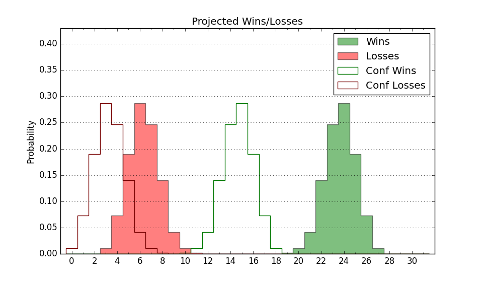

| Home | Game Probabilities | Conferences | Preseason Predictions | Odds Charts | NCAA Tournament |
| City: | Moraga, California | |
| Conference: | West Coast (1st)
| |
| Record: | 8-0 (Conf) 17-3 (Overall) | |
| Ratings: | Comp.: 23.3 (29th) Net: 23.7 (27th) Off: 118.1 (34th) Def: 94.4 (28th) SoR: 70.4 (30th) |
| Remaining | ||||||
|---|---|---|---|---|---|---|
| Date | Opponent | Win Prob | Pred. | |||
| 1/29 | @ Santa Clara (59) | 52.4% | W 72-71 | |||
| 2/1 | Gonzaga (13) | 53.5% | W 75-74 | |||
| 2/6 | @ San Francisco (74) | 60.5% | W 69-66 | |||
| 2/8 | @ Oregon St. (53) | 50.4% | W 67-66 | |||
| 2/11 | Santa Clara (59) | 78.9% | W 76-67 | |||
| 2/15 | Washington St. (87) | 87.5% | W 79-65 | |||
| 2/19 | Portland (314) | 98.8% | W 84-56 | |||
| 2/22 | @ Gonzaga (13) | 25.3% | L 71-78 | |||
| 2/27 | @ Loyola Marymount (156) | 83.5% | W 70-60 | |||
| 3/1 | Oregon St. (53) | 77.6% | W 70-63 | |||
| Previous | Game Score | |||||
| Date | Opponent | Win Prob | Result | Off | Def | Net |
| 11/4 | Towson (191) | 96.0% | W 76-69 | -1.1 | -12.8 | -13.9 |
| 11/7 | Chattanooga (160) | 94.7% | W 86-74 | 2.9 | -13.5 | -10.6 |
| 11/12 | Akron (112) | 91.9% | W 87-68 | 3.4 | -0.4 | 2.9 |
| 11/17 | (N) Nebraska (50) | 64.6% | W 77-74 | 7.2 | -10.9 | -3.7 |
| 11/23 | Cal Poly (237) | 97.4% | W 80-66 | -13.2 | -1.2 | -14.3 |
| 11/28 | (N) USC (65) | 69.9% | W 71-36 | -2.4 | 43.9 | 41.5 |
| 11/29 | (N) Arizona St. (61) | 67.4% | L 64-68 | -11.4 | 2.4 | -9.0 |
| 12/3 | UTSA (211) | 96.5% | W 82-74 | -16.1 | -2.0 | -18.2 |
| 12/7 | @Utah (75) | 60.6% | W 72-63 | -4.1 | 7.7 | 3.5 |
| 12/14 | (N) Boise St. (42) | 58.3% | L 65-67 | -12.8 | 4.6 | -8.2 |
| 12/19 | Merrimack (168) | 95.1% | W 73-68 | 2.8 | -29.7 | -26.9 |
| 12/22 | Utah St. (39) | 70.8% | L 68-75 | -10.2 | -8.6 | -18.8 |
| 12/28 | Pacific (282) | 98.3% | W 70-60 | -11.6 | -8.5 | -20.1 |
| 1/2 | Pepperdine (184) | 95.7% | W 71-41 | -9.2 | 22.7 | 13.5 |
| 1/4 | @Portland (314) | 95.9% | W 81-58 | 0.7 | 4.9 | 5.6 |
| 1/7 | Loyola Marymount (156) | 94.5% | W 81-56 | 14.6 | -0.6 | 14.0 |
| 1/11 | @San Diego (277) | 94.2% | W 103-56 | 38.8 | -2.3 | 36.4 |
| 1/18 | @Pepperdine (184) | 86.7% | W 74-50 | 6.1 | 12.1 | 18.2 |
| 1/23 | San Francisco (74) | 83.9% | W 71-51 | 2.4 | 15.7 | 18.2 |
| 1/25 | @Washington St. (87) | 67.3% | W 80-75 | 18.0 | -16.1 | 1.8 |
| Stats & Trends | |||||
|---|---|---|---|---|---|
| Current | Day | Week | Month | Season | |
| Composite | 23.3 | +0.5 | +1.9 | +8.0 | +8.4 |
| Comp Rank | 29 | +1 | +6 | +29 | +22 |
| Net Efficiency | 23.7 | +0.4 | +1.8 | +8.3 | -- |
| Net Rank | 27 | +2 | +8 | +35 | -- |
| Off Efficiency | 118.1 | +1.4 | +1.8 | +5.1 | -- |
| Off Rank | 34 | +8 | +10 | +30 | -- |
| Def Efficiency | 94.4 | -1.0 | -0.0 | +3.2 | -- |
| Def Rank | 28 | -5 | -1 | +40 | -- |
| SoS Rank | 127 | +25 | +44 | -32 | -- |
| Exp. Wins | 23.7 | +0.4 | +0.9 | +3.2 | +2.8 |
| Exp. Conf Wins | 14.7 | +0.4 | +0.9 | +3.2 | +2.5 |
| Conf Champ Prob | 69.1 | +7.7 | +18.4 | +65.4 | +59.0 |

| Advanced Stats | ||
|---|---|---|
| Stat | Value | Rank |
| Off Eff FG % | 0.531 | 106 |
| Off Ast Ratio | 0.180 | 30 |
| Off ORB% | 0.419 | 4 |
| Off TO Rate | 0.122 | 24 |
| Off FT Ratio | 0.343 | 147 |
| Def Eff FG % | 0.445 | 22 |
| Def Ast Ratio | 0.133 | 87 |
| Def ORB% | 0.248 | 44 |
| Def TO Rate | 0.154 | 142 |
| Def FT Ratio | 0.264 | 34 |